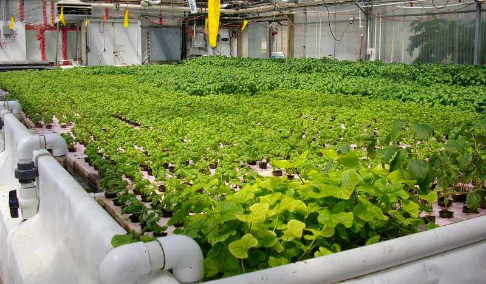

The History of Hydroponics
Hydroponics is the practice of growing plants without soil. Hydroponics comes from
hydro, meaning water, and ponos,
meaning labor. Hydroponics has proliferated over the past century. Hydroponic systems today are hyper-complex
and
involve sensors and computers. They are at the forefront of agriculture and technology. However, looking into
the past,
we see a simpler beginning for hydroponics.
600 BC: The Hanging Gardens Of Babylon
Descriptions of the mysterious Gardens of Babylon come from the ancient greeks. Strabo and Philo
of Byzantium are our
best sources for the gardens. They described the gardens as having “plants cultivated above ground level” and
the “roots
of trees embedded in an upper terrace rather than earth”. Maybe not precisely hydroponics, but that does sound
close to
it. Further ancient writings state:
“Streams of water emerging from elevated sources flow partly in a straight line down sloping
channels and are partly
forced upwards through bends and spirals to gush out higher up, being impelled through the twists of those
devices by
mechanical forces.”
The garden had extensive
irrigation systems, similar to hydroponics. By raising water from the
Euphrates river, they
could water their plants high above. Sadly, the Hanging Gardens of Babylon aren’t exactly hydroponics. A further
quote
by Philo references the plants being grown in dirt:
“It consists of vaulted terraces raised above one another and resting upon cube-shaped pillars.
These are hollow and
filled with earth, allowing trees of the largest size to be planted.”
So not perfect hydroponics. The advanced irrigation systems of the Hanging Gardens of Babylon
laid the foundations that
hydroponics stand on today.
The existence of the gardens is debated. There has been no concrete proof of the
gardens, and only five primary sources
have been found (though there are very few surviving ancient greek documents in general). Nevertheless, the
gardens are
one of the seven wonders of the ancient world, along with the Great Pyramids of Giza, the Temple of Artemis at
Ephesus,
the Statue of Zeus at Olympia, the Mausoleum at Halicarnasus, the Colossus of Rhodes, and the Pharos Lighthouse
at
Alexandria.

Thomas SchochLicense
1100 AD: Aztec Floating Gardens
Another ancient example of hydroponic like activity is the Aztec floating gardens. Surrounding
Tenochtitlan, the Aztec
capital city, was a vast lake. Through a long process of trial and error, the Aztecs living on the lake learned
to build
rafts of reeds and leaves held together with tough roots to form large rafts. They loaded the rafts with rich
soil
dredged from the bottom of the lake. The mud from the lake provided superb nutrients for the plants to grow, and
the
surrounding lake provided constant irrigation to the rafts. As the rafts grew in size, they became more like
floating
islands. Farmers built houses on top of them, planted trees, and produced food. The plants would grow through
the rafts
so their roots were directly in the lake water. This is very similar to hydroponics. Although not soilless, the
roots
were directly exposed to the water, like hydroponics.
At times, many of these rafts would combine to form islands the length of a football
field. When the Spaniards arrived
in the new world, they were amazed by the farming methods of the Aztecs. William Prescott, a historian who
followed the
Spaniards, described the chinampas as “Wondering Islands of Verdure, teeming with flowers and vegetables and
moving like
rafts over the water”. Chinampas were so effective that they were used as a way of living well into the 1800s.
echiner1License
1300 AD: Chinese Rice Feilds
Rice terraces are mostly found in Southeast Asia due to its ideal climate and geographical
location. Rice terraces were
built as cuts into the mountainside. Water is stored at the top of the mountain and is directed down the
mountain to
water the rice. After three weeks of growing, the rice seed is transplanted to its terraces filled with 6 inches
of
water. Transplanting the seed gives the rice a head start against weeds and pests. As the plants grow, the water
level
will fall until the ground is dry and the rice is ready to harvest.
Again, not an exact version of hydroponics (and this one is a bit more of a stretch
than the others.) Although, the 6
inches of water is similar to the Deep Water Culture (DWC) hydroponics technique. Maybe check out our 5-gallon
bucket
guide for DWC! This method of rice growing continues to be practiced today.
1627 AD: Sylva Sylvarum
This book by Francis Bacon and William Rawley was revolutionary. It is the first written
reference to growing plants
without any soil. Published after his death, It details Sir Francis Bacon’s research into soilless plants.
1648 AD: Scientific Study Into Hydroponics
Our earliest experiments into the parts that make up plant growth were in 1600 by Jan van
Helmont. Helmont performed the
famous Willow Shoot Experiment, which showed that plants needed more than just dirt. He was a little off, he
thought
plants got all of their mass from water when they got it from the air too, but he was getting there.
In 1699, John Woodward, a scientist, recorded the first case of plants grown truly
hydroponically. He grew plants with
various types of soil mixed with water and found that plants grew well when combined with a lot of soil.
Basically,
Woodward made a fertilizer solution from dirt! Of course, Woodward didn’t know what he was doing when he did
this, nor
did Woodward know specifically why dirt and water were good for plants, but what he did was amazing.
Following Woodward's research, scientists continued to make breakthroughs. For example,
they determined that water is
absorbed by plant roots and plants exchange air through their leaves. They also found that plants take up
nutrients from
the soil.
More research made a list of 9 elements required for plant growth. Jean Baptiste
Bossingault confirmed this list as
accurate and began an agricultural chemical supply company in 1850. They started to grow plants in sand, quartz,
and
charcoal while supplying them with the nine essential elements. Further discoveries and developments led to
Wilhelm Knop
founding the modern methods we use in hydroponics and has been nicknamed “The Father of Water Culture.”
True Hydroponics
autonomous hydroponics
In the 1920s, Dr. William F. Greicke from the US began experimenting with the practical
application of plant nutrition
on a large scale. He coined the term “hydroponics” because of the greek meaning “water-working” He is considered
the
true founder of hydroponics and growing plants without soil. US government interest began to develop in 1925.
Greenhouse
soil had to be replaced or heavily fertilized annually. Hydroponics could solve all of these issues. US
government
research workers experimented on soilless culture methods (hydroponics) to replace soil. The results were okay
due to
hydroponic’s resource-intense nature.

BryghtknyghtLicense
Commercial Hydroponics
Following WWII, a few large hydroponic operations were set up in the US, mainly in Florida and
the Southwest. Many were
outdoors and suffered from poor construction, management and weather. One large problem was caused by lime in
the
concrete leaching into the nutrient solution and poisoning the crops. In addition, metals and other heavy
elements
entered the system, turning the plants toxic and uneatable.
In the 1960s, when plastics began to take over the world, interest in hydroponics was
renewed. Plastic piping and lining
were much cheaper than traditionally used metal and concrete. Large investments were made in hydroponics growing
systems. However, rising oil prices in the 1970s substantially increased heating and cooling costs. This and the
banning
of DDT caused the bankruptcy of many hydroponic facilities.
After the initial failures, improvements were made, and there are many commercial
hydroponic systems today. Hydroponics
is feasibly used by many companies where soil gardening is not possible. Prime examples include oil and mining
companies. They are located in areas without arable land, so hydroponics works well for them.
Hydroponics at War
Hydroponics found a strong foothold in World War II. In wartime, shipping fresh fruits and
vegetables overseas are not
possible. It is a waste of resources and expensive to ship; typical vegetable shipments were delivered via an
airdrop,
which was very inefficient. Hydroponics provided a method for soldiers to grow plants in the non-arable pacific
islands
in the 1940s. On the homefront, hydroponics was encouraged by the British government's “Grow More Food” Campaign
between
1939 and 1945.
Chmee2License
History of
Hydroponic Cannabis
In the 1980s, hydroponics was embraced as a method to grow cannabis. It largely came from
Richard Nixon's crackdown on
cannabis from Mexico. The US needed a way to grow high-quality cannabis cheaply and quietly. High-intensity
discharge
indoor grow lights also became available around then. This made growing marijuana attractive to many and
possible for
most. Companies began to grow large solely based on providing services for growing marijuana with complicated
hydroponic
systems.
The Dutch, prolific and efficient farmers, brought cannabis-growing tech to a new
level. They have championed cloning
methods, seed breeding, new growing mediums, nutrient technology, and CO2 infusion. The Dutch government has
allowed for
huge cannabis-growing hydroponic systems to be built and deployed. In addition, they allowed many small stores
to sell
cannabis and hash to people, a rarity in our world. Once hydroponic cannabis took off, cannabis suppliers from
places
like North Africa and the Middle East lost a lot of traction.
Questions
If you have any questions involving the history of hydroponics or hydroponics, reach out. We
will be more than
happy to answer your questions. hydroponicsathome.us@gmail.com